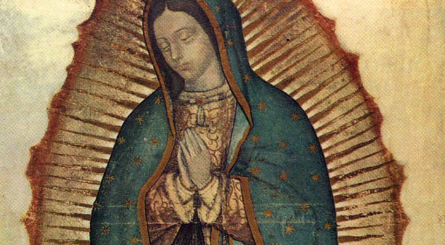

Our Lady of Guadalupe
Patroness of the Americas

The Virgin Mary appeared to St. Juan Diego in 1531
Timeline of the apparitions:
- 1st Apparition (Saturday, December 9th, early morning): Our Lady calls Juan Diego by his name. He goes up the hill of Tepeyac to meet Her. She commands him to go to the bishop and ask him to build a shrine on the hill.
- 2nd Apparition (Saturday, December 9th, 5pm): Juan Diego goes back to the hill and tells Our Lady that the bishop hasn't believed him and She should choose another person for the task. But Mary answers that it's him who She has chosen and commands him to go to the bishop again.
- 3rd Apparition (Sunday, December 10th, 3pm): Juan Diego, once again at the hill, tells Our Lady that the bishop is asking for a sign to believe him. Mary tells him to go back the next day to meet Her, and promises to give him a sign. However, Juan Diego's uncle Bernardino falls sick and Juan Diego doesn't go to the hill the next day.
- 4th Apparition (Tuesday, December 12th, early morning): Juan Diego goes out to find a priest for his uncle, who is dying. He avoids the hill, but then it's Our Lady who goes to meet him. She reassures him that his uncle has been healed, and tells him to go up the hill to find a sign for the bishop. Juan Diego obeys, and he finds roses, which is miraculous given the time of the year.
- 5th Apparition (Tuesday, December 12th, early morning): At the same time, Our Lady appears to Juan Diego's uncle, heals him and reveals to him that She wishes to be venerated there as Our Lady of Guadalupe.
- The image on the tilma (Tuesday, December 12th, noon): Juan Diego goes to the bishop to show him the flowers but, when he unfolds his tilma to take them out, an even greater miracle is revealed: Our Lady had printed Her image on the tilma!
“Let not your heart be disturbed… Am I not here, who is your Mother? Are you not under my protection? Am I not your health? Are you not happily within my fold? What else do you wish? Do not grieve nor be disturbed by anything.”
Our Lady to St. Juan Diego
Visit this website to discover the secrets of St. Juan Diego's tilma.